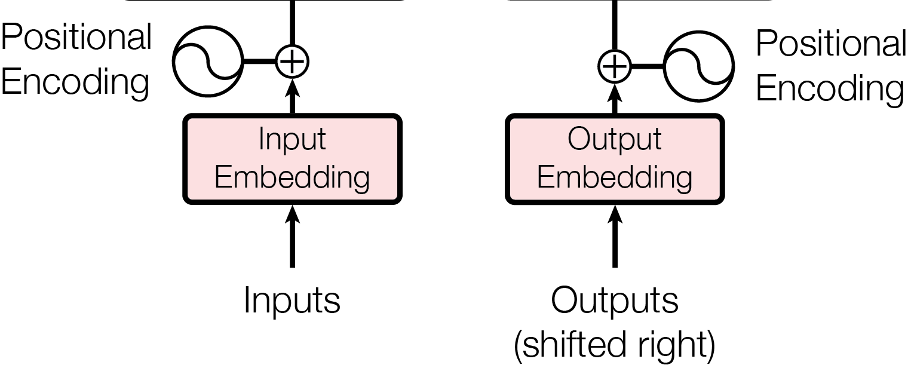
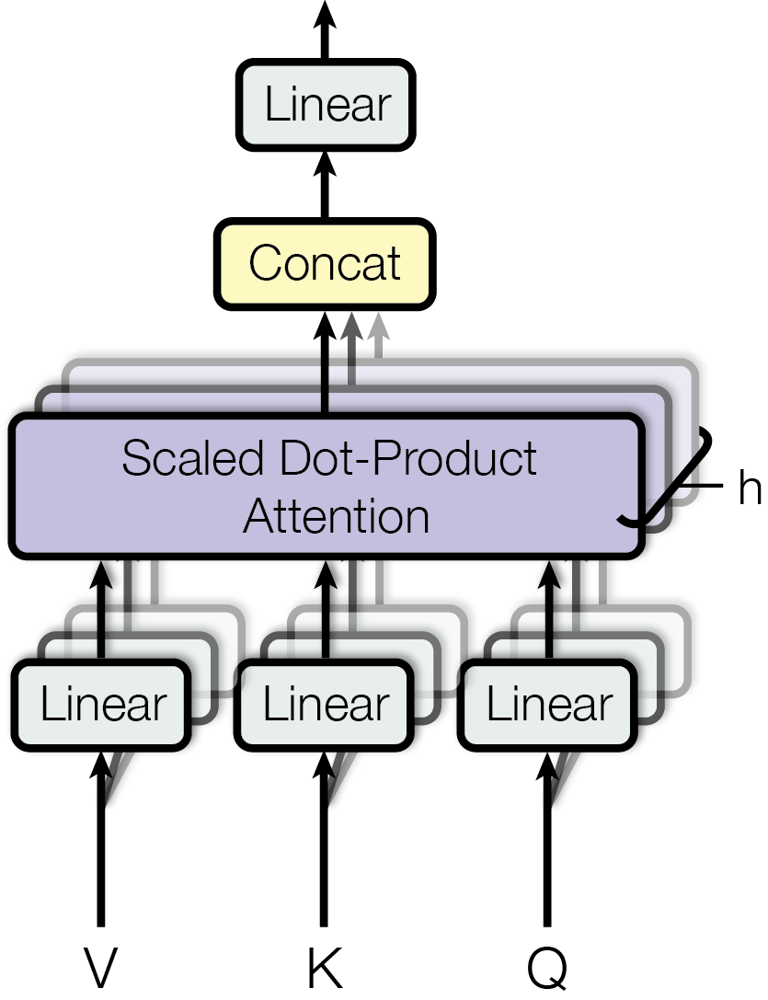
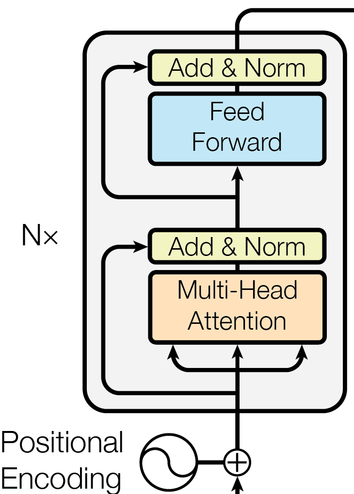
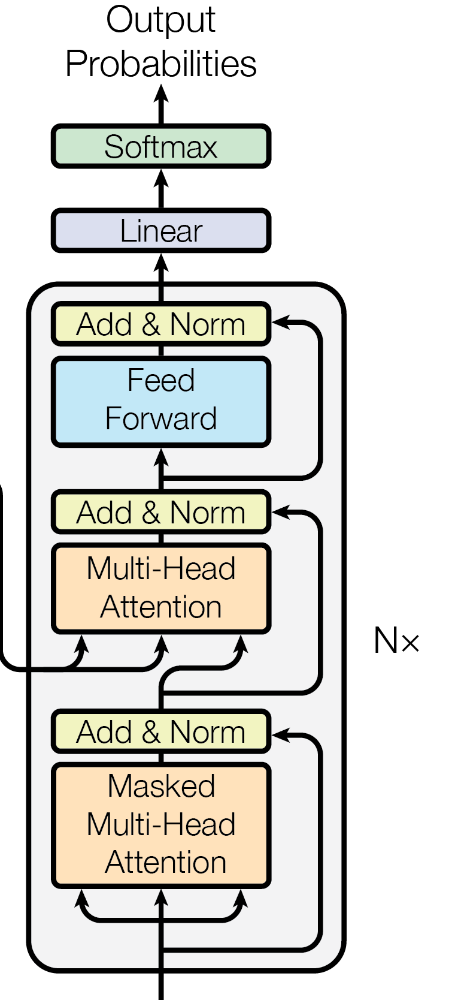
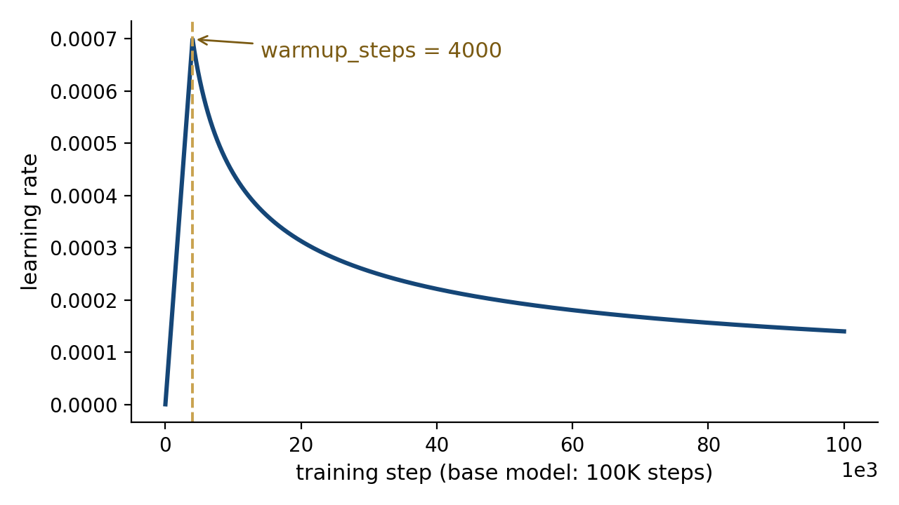
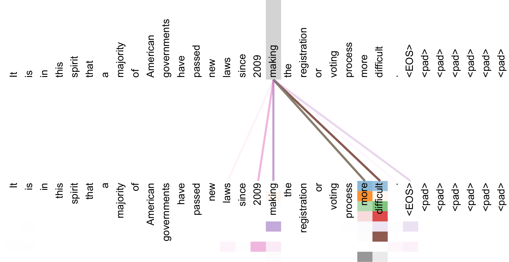

Attention Is All You Need
ML reading group
Paper by Ashish Vaswani, Noam Shazeer, Niki Parmar, Jakob Uszkoreit, Llion Jones, Aidan N. Gomez, Łukasz Kaiser, Illia Polosukhin
Presented by Presenter Name
arXiv:1706.03762v7 (2 Aug 2023)
Background: RNNs compute one position at a time
$x_t$: input at position $t$; $h_t$: hidden state; $f$: the recurrent cell (LSTM/GRU); $n$: sequence length.
Seq2seq encoders/decoders sutskever14,cho2014learning and attention-based NMT bahdanau2014neural keep this chain: no parallelism within a sequence.
Paper Sec. 1 (recurrence description); diagram and $f$ notation: presenter
Thesis: self-attention shortens every path to O(1)
| Layer type | Complexity per layer | Sequential operations | Maximum path length |
|---|---|---|---|
| Self-Attention | $O(n^2 \cdot d)$ | $O(1)$ | $O(1)$ |
| Recurrent | $O(n \cdot d^2)$ | $O(n)$ | $O(n)$ |
| Convolutional | $O(k \cdot n \cdot d^2)$ | $O(1)$ | $O(log_k(n))$ |
| Self-Attention (restricted) | $O(r \cdot n \cdot d)$ | $O(1)$ | $O(n/r)$ |
$n$: sequence length; $d$: representation dimension; $k$: convolution kernel size; $r$: neighborhood size of restricted self-attention; $O(\cdot)$: asymptotic order.
Self-attention is cheaper per layer than recurrence when $n \lt d$, typical for sentence-level word pieces. Shaded row: presenter highlight, not paper emphasis.
Paper Table 1 and Sec. 4
The Transformer: an encoder–decoder with no recurrence

Encoder (left) maps inputs $(x_1, ..., x_n)$ to continuous representations $\mathbf{z} = (z_1, ..., z_n)$.
Decoder (right) reads $\mathbf{z}$ and emits $(y_1,...,y_m)$ one symbol at a time, feeding back what it has generated.
Each stack: $N=6$ identical layers; every sub-layer outputs $d_{\text{model}}=512$ dims.
$n, m$: input/output lengths; $x_i$: input symbol representation; $z_i$: encoder output at position $i$; $y_j$: output symbol.
Paper Fig. 1 and Sec. 3, 3.1
Step 1: token embeddings plus sinusoidal positions

Problem attention is order-blind; without positions, a sentence is a bag of tokens.
$PE$: positional encoding, same width $d_{\text{model}}$ as the embedding, so the two are summed; $pos$: token position; $i$: dimension-pair index.
How each dimension is a sinusoid; wavelengths grow geometrically from $2\pi$ to $10000\cdot 2\pi$, so a fixed offset is a linear map.
Embeddings are learned, scaled by $\sqrt{d_{\text{model}}}$, and share weights with the output projection.
Cropped from Paper Fig. 1; Sec. 3.4, 3.5
Step 2: attention is a softmax-weighted average

- $Q$: queries, one row per position asking “what do I need?”, each of dimension $d_k$;
- $K$: keys, one per position, also dimension $d_k$; $V$: values (dimension $d_v$) that get mixed;
- $K^T$: transpose of $K$; $\mathrm{softmax}$ runs over keys, so each query's weights sum to 1.
Why scale? If components $q_i, k_i$ of a query $q$ and key $k$ have mean 0 and variance 1, then $q \cdot k = \sum_{i=1}^{d_k} q_ik_i$ has variance $d_k$; large logits saturate the softmax and shrink gradients.
Same as dot-product attention except for $\frac{1}{\sqrt{d_k}}$; faster than additive attention bahdanau2014neural because it is pure matrix multiplication.
Paper Fig. 2 (left), Eq. 1, Sec. 3.2.1 and footnote 4
Step 3: h heads attend in parallel subspaces

- $h$: number of heads; $i$: head index; $\mathrm{head_i}$: output of head $i$;
- $W^Q_i, W^K_i \in \R^{d_{\text{model}} \times d_k}$, $W^V_i \in \R^{d_{\text{model}} \times d_v}$: learned per-head projections ($\R$: real numbers);
- $\mathrm{Concat}$: stack head outputs side by side; $W^O \in \R^{hd_v \times d_{\text{model}}}$: learned output projection.
Why one head averages everything into one distribution; several heads can look at different positions for different reasons.
Setting $h=8$, $d_k=d_v=d_{\text{model}}/h=64$: total cost ≈ one full-width head.
Paper Fig. 2 (right), Sec. 3.2.2
Step 4: encoder layer = self-attention, then a per-token MLP

Self-attention: $Q$, $K$, $V$ all come from the previous encoder layer, so every position sees every position.
Add & Norm around each sub-layer (residual he2016deep + layer norm layernorm2016):
Feed-forward, same weights at every position:
$x$: one position's input to the sub-layer; $\mathrm{Sublayer}$: the attention or FFN it wraps; $W_1, b_1$ / $W_2, b_2$: weights and biases of the two linear maps, inner width $d_{ff}=2048$; $\max(0,\cdot)$: ReLU.
Cropped from Paper Fig. 1; Sec. 3.1, 3.2.3, 3.3
Step 5: the decoder masks the future, then reads the encoder

Masked self-attention: inputs are the outputs shifted right; softmax inputs for future positions are set to $-\infty$, so position $i$ only sees outputs before $i$.
Encoder–decoder attention: $Q$ from the decoder, $K$ and $V$ from the encoder output $\mathbf{z}$; every output position can look at every input position.
Output: FFN, then Linear + Softmax give next-token probabilities; generation repeats auto-regressively.
Cropped from Paper Fig. 1; Sec. 3.1, 3.2.3, 3.4
Training: Adam with warm-up, then inverse-sqrt decay

Plotted from Eq. 3 with $d_{\text{model}}=512$, $warmup\_steps=4000$ (presenter-generated)
$lrate$: learning rate; $step\_num$: current step; $warmup\_steps$: linear warm-up length (4000).
- Adam kingma2014adam: $\beta_1=0.9$, $\beta_2=0.98$ (moment decays), $\epsilon=10^{-9}$ (stability constant).
- Residual dropout $P_{drop}=0.1$; label smoothing $\epsilon_{ls}=0.1$ (hurts perplexity, helps BLEU).
- 8 × P100: base 100K steps (12 h); big 300K steps (3.5 days).
Paper Eq. 3, Sec. 5.2–5.4
What the experiments measure
| Experiment | Training data | Evaluated on | Metric |
|---|---|---|---|
| WMT14 EN→DE | 4.5M sentence pairs, shared BPE vocab ≈37K | newstest2014 | BLEU ↑ |
| WMT14 EN→FR | 36M sentences, 32K word-piece vocab | newstest2014 | BLEU ↑ |
| Model variations | EN→DE, one factor of the base model changed | newstest2013 (dev) | PPL ↓, BLEU ↑ |
| Constituency parsing | WSJ ≈40K sentences; semi-sup. ≈17M | WSJ Section 23 | F1 ↑ |
- BLEU: n-gram overlap with reference translations. PPL: per-wordpiece perplexity, not comparable to per-word PPL.
- Training cost: FLOPs estimated as training time × #GPUs × assumed sustained TFLOPS per GPU.
- Translation decoding: beam 4, length penalty $\alpha=0.6$ ($\alpha$: favors longer outputs), checkpoint averaging; the dev-set variations use no averaging.
Paper Sec. 5.1, 6.1–6.3, footnote 5, Table 3 caption
Base model beats all prior EN→DE scores at the lowest cost
| Model | BLEU ↑ | Training cost (FLOPs) ↓ | ||
|---|---|---|---|---|
| EN-DE | EN-FR | EN-DE | EN-FR | |
| ByteNet NalBytenet2017 | 23.75 | |||
| Deep-Att + PosUnk DBLP:journals/corr/ZhouCWLX16 | 39.2 | $1.0\cdot10^{20}$ | ||
| GNMT + RL wu2016google | 24.6 | 39.92 | $2.3\cdot10^{19}$ | $1.4\cdot10^{20}$ |
| ConvS2S JonasFaceNet2017 | 25.16 | 40.46 | $9.6\cdot10^{18}$ | $1.5\cdot10^{20}$ |
| MoE shazeer2017outrageously | 26.03 | 40.56 | $2.0\cdot10^{19}$ | $1.2\cdot10^{20}$ |
| Deep-Att + PosUnk Ensemble DBLP:journals/corr/ZhouCWLX16 | 40.4 | $8.0\cdot10^{20}$ | ||
| GNMT + RL Ensemble wu2016google | 26.30 | 41.16 | $1.8\cdot10^{20}$ | $1.1\cdot10^{21}$ |
| ConvS2S Ensemble JonasFaceNet2017 | 26.36 | 41.29 | $7.7\cdot10^{19}$ | $1.2\cdot10^{21}$ |
| Transformer (base model) | 27.3 | 38.1 | $\boldsymbol{3.3\cdot10^{18}}$ | |
| Transformer (big) | 28.4 | 41.8 | $2.3\cdot10^{19}$ | |
Bold exactly as in the paper (v7 bolds both 41.29 and 41.8). Shaded rows: presenter highlight. Blank: not reported.
Read with care: Sec. 6.1 text states 41.0 EN-FR BLEU for the big model, Table 2 lists 41.8. FLOPs are estimates (time × GPUs × assumed TFLOPS).
Paper Table 2, Sec. 6.1, footnote 5; cited baselines listed under References
Head count matters; shrinking the key size hurts
| $N$ | $d_{\text{model}}$ | $d_{ff}$ | $h$ | $d_k$ | $d_v$ | $P_{drop}$ | $\epsilon_{ls}$ | train steps | PPL (dev) ↓ | BLEU (dev) ↑ | params ×10⁶ | |
|---|---|---|---|---|---|---|---|---|---|---|---|---|
| base | 6 | 512 | 2048 | 8 | 64 | 64 | 0.1 | 0.1 | 100K | 4.92 | 25.8 | 65 |
| (A) | 1 | 512 | 512 | 5.29 | 24.9 | |||||||
| 4 | 128 | 128 | 5.00 | 25.5 | ||||||||
| 16 | 32 | 32 | 4.91 | 25.8 | ||||||||
| 32 | 16 | 16 | 5.01 | 25.4 | ||||||||
| (B) | 16 | 5.16 | 25.1 | 58 | ||||||||
| 32 | 5.01 | 25.4 | 60 |
(A) varies $h$ at constant compute: one head is 0.9 BLEU below the best; 32 heads also drop. (B) smaller $d_k$ alone lowers BLEU. Blank = base value.
Table 3, rows base–(B); remaining rows on separate slides. EN→DE dev set, no checkpoint averaging. Paper bold (best PPL 4.33, BLEU 26.4) is in the big row. $N$: layers; $h$: heads; $d_k, d_v$: key/value dims; $P_{drop}$: dropout; $\epsilon_{ls}$: label smoothing.
Paper Table 3 (base, A, B) and Sec. 6.2
Bigger models are better: more layers, width, FFN
| $N$ | $d_{\text{model}}$ | $d_{ff}$ | $h$ | $d_k$ | $d_v$ | $P_{drop}$ | $\epsilon_{ls}$ | train steps | PPL (dev) ↓ | BLEU (dev) ↑ | params ×10⁶ | |
|---|---|---|---|---|---|---|---|---|---|---|---|---|
| base | 6 | 512 | 2048 | 8 | 64 | 64 | 0.1 | 0.1 | 100K | 4.92 | 25.8 | 65 |
| (C) | 2 | 6.11 | 23.7 | 36 | ||||||||
| 4 | 5.19 | 25.3 | 50 | |||||||||
| 8 | 4.88 | 25.5 | 80 | |||||||||
| 256 | 32 | 32 | 5.75 | 24.5 | 28 | |||||||
| 1024 | 128 | 128 | 4.66 | 26.0 | 168 | |||||||
| 1024 | 5.12 | 25.4 | 53 | |||||||||
| 4096 | 4.75 | 26.2 | 90 |
(C) one size factor at a time: $N=2$ loses 2.1 BLEU; $d_{\text{model}}=1024$ and $d_{ff}=4096$ reach 26.0 and 26.2, at 2.6× and 1.4× the parameters.
Table 3, rows base and (C). Blank = base value. EN→DE dev set; single runs, no variance reported. $N$: layers; $d_{\text{model}}$: model width; $d_{ff}$: FFN inner width.
Paper Table 3 (base, C) and Sec. 6.2; parameter ratios derived (168/65, 90/65)
Dropout helps; learned positions ≈ sinusoids
| $N$ | $d_{\text{model}}$ | $d_{ff}$ | $h$ | $d_k$ | $d_v$ | $P_{drop}$ | $\epsilon_{ls}$ | train steps | PPL (dev) ↓ | BLEU (dev) ↑ | params ×10⁶ | |
|---|---|---|---|---|---|---|---|---|---|---|---|---|
| base | 6 | 512 | 2048 | 8 | 64 | 64 | 0.1 | 0.1 | 100K | 4.92 | 25.8 | 65 |
| (D) | 0.0 | 5.77 | 24.6 | |||||||||
| 0.2 | 4.95 | 25.5 | ||||||||||
| 0.0 | 4.67 | 25.3 | ||||||||||
| 0.2 | 5.47 | 25.7 | ||||||||||
| (E) | positional embedding instead of sinusoids | 4.92 | 25.7 | |||||||||
| big | 6 | 1024 | 4096 | 16 | 0.3 | 300K | 4.33 | 26.4 | 213 | |||
(D) no dropout: 24.6 BLEU vs 25.8. (E) learned positional embeddings: 25.7 vs 25.8. The big model combines the larger settings.
Table 3, rows base, (D), (E), big. Blank = base value. Bold as in the paper (best dev PPL and BLEU). EN→DE dev set, single runs. $P_{drop}$: dropout; $\epsilon_{ls}$: label smoothing.
Paper Table 3 (base, D, E, big) and Sec. 6.2
The same model reaches 92.7 F1 on WSJ parsing
| Parser | Training | WSJ 23 F1 ↑ |
|---|---|---|
| Vinyals & Kaiser el al. (2014) KVparse15 | WSJ only, discriminative | 88.3 |
| Petrov et al. (2006) petrov-EtAl:2006:ACL | WSJ only, discriminative | 90.4 |
| Zhu et al. (2013) zhu-EtAl:2013:ACL | WSJ only, discriminative | 90.4 |
| Dyer et al. (2016) dyer-rnng:16 | WSJ only, discriminative | 91.7 |
| Transformer (4 layers) | WSJ only, discriminative | 91.3 |
| Zhu et al. (2013) zhu-EtAl:2013:ACL | semi-supervised | 91.3 |
| Huang & Harper (2009) huang-harper:2009:EMNLP | semi-supervised | 91.3 |
| McClosky et al. (2006) mcclosky-etAl:2006:NAACL | semi-supervised | 92.1 |
| Vinyals & Kaiser el al. (2014) KVparse15 | semi-supervised | 92.1 |
| Transformer (4 layers) | semi-supervised | 92.7 |
| Luong et al. (2015) multiseq2seq | multi-task | 93.0 |
| Dyer et al. (2016) dyer-rnng:16 | generative | 93.3 |
4 layers, $d_{\text{model}}=1024$; only dropout, learning rate and beam tuned on Section 22. No bold in the paper's table; shaded rows: presenter highlight.
Paper Table 4 and Sec. 6.3 (row labels verbatim); cited parsers listed under References
Some heads follow long-distance dependencies

Encoder self-attention, layer 5 of 6, from “making” (colors = heads): several heads attend to “more difficult”.
Qualitative, hand-picked example; no quantitative interpretability analysis in the paper.
Paper Fig. 3 (appendix) and Sec. 4
What the evidence does and does not show
| Claim | Supported by | Open or weaker |
|---|---|---|
| Better translation | BLEU on two WMT14 pairs | Single runs, no variance; BLEU only; 41.0 vs 41.8 EN-FR inconsistency |
| Cheaper training | Estimated FLOPs, wall-clock | Estimate assumes per-GPU throughput; not measured |
| More parallel | Table 1 analysis | $O(n^2 \cdot d)$ per layer: long inputs need restricted attention, proposed but not tested |
| Design choices matter | Table 3 dev-set variations | One factor at a time, single runs: “consistent with”, not causal |
| Interpretable heads | Appendix visualizations | Hand-picked, qualitative |
Paper Sec. 4, 6, 7 and appendix; presenter assessment
Takeaways
- Replacing recurrence with attention trades $O(n)$ sequential steps for $O(n^2 \cdot d)$ parallel work.
- Multi-head attention + residual Add & Norm + position-wise FFN is the whole layer; positions enter only through $PE$.
- On WMT14, it beat recurrent and convolutional systems in BLEU at a fraction of their estimated cost.
Presenter synthesis based on Paper Table 1, 2 and Sec. 3